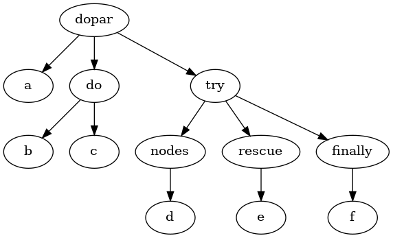

ablauf: long-running workflow management
Wishlist for asynchronous jobs
An example language
Most asynchronous workflows rely on basic flow control:
- Ability to execute long running tasks in parallel
- Sequential execution
- Basic rescue mechanism
Resulting ASTs for such programs are extremely limited. Syntax trees can be modelled with four node types:
- Leaves (actions to be performed)
- Sequential branches (actions in sequence)
- Parallel branches (actions in parallel)
- Try branches (try/rescue/finally triples)
So a simple program like:
(dopar!!
(log!! "a")
(do!!
(log!! "b")
(log!! "c"))
(try!!
(log!! "d")
(rescue!! (log!! "e"))
(finally!! (log!! "f"))))
Would result in the following tree:

This is what ablauf.ast provides, with a corresponding spec.
Job execution
Now that a simplistic but sufficient AST exists, comes the question of its execution. It would be trivial to walk the above tree and execute things as they are found. The notion of parallel nodes makes things a bit less obvious.
Long running workflows bring three additional requirements to the table:
- Execution should be able to restart from a previous known-state
- Workflows might need to execute in different contexts
- Job statuses should be inspectable
The first requirement mandates that jobs should do their best to provide high availability, the second mandates that workflows should be decoupled from their execution environment.
An abstract job execution library
To fulfill the above requirements, it was assumed that jobs would either be processed from a manifold-based single-process environment or from Kafka consumers depending on the job. So can a simple AST’s execution be separated from its execution environment?
The proposed model here takes inspiration from Continuation Passing Style (CPS), but proposes passing the resulting syntax tree instead of a procedure.
Execution of a program results in feeding the result of previously dispatched actions to a reducer which generates new potential actions to dispatch. This can be provided with the following signatures
make_job :: AST -> Job
restart_job :: Job -> [Results] -> Job -> [Actions]
Here make_job, generates a job ready for execution. restart_job given a set of results would yield an updated job and follow-up actions to take. The namespace in bundes.job provides exactly this functionality for the AST described above.
This was simplified by clojure.zip’s zippers, a data structure which stores a tree and the position in that tree, making walking and storing AST state that much easier. Gérard Huet wrote a paper which inspired clojure.zip, a recommended read.
Execution on Kafka
With Kafka, this strategy would require a topic per action, and one for program restarts.
A restarter topic receives either new executions or restarts with results.
With the provided dispatch actions generated, messages would be sent to per-action topics. Upon execution on the per-action topics, messages would be sent back to the restarter topic.
Execution with Manifold
For an in-process, non distributed version manifold provides sufficient facilities to write a simple fully asynchronous executor. A working implementation can be found in ablauf.job.manifold.
Inspecting state
With the proposed approach, given unique IDs for executions, storing the full execution tree after each restart provides full introspection into the state of each job.
Future work
Conditionals in flow control
Threading a context through operations and providing conditional execution is a logical next step. It’s unclear yet whether it will be needed but would be easy.
Lazy topology lookups
The presented work assumes a static AST, dynamic ASTs would be easy to add, expanding nodes based on information provided in steps.
Trying out
(require '[ablauf.job.ast :as ast]
'[ablauf.job.manifold :as job]
'[ablauf.job.store :ast store])
(def ast
(ast/dopar!!
(ast/log!! "a")
(ast/try!!
(ast/fail!! "error")
(ast/log!! "should-not-run")
(rescue!! (ast/log!! "rescue"))
(finally!! (ast/log!! "finally")))))
(let [db (atom {})
store (store/mem-job-store db)
[job context] @(job/runner store ast)]
...
(job/failed? job) ;;=> false
(job/done? job) ;;=> true
@db)
Caveats
This solution has a few obvious problems:
Storage bloat
Storing the full AST tree, including results, for each step will limit the size of jobs that can be created. It does not seem however that we will have deep jobs.